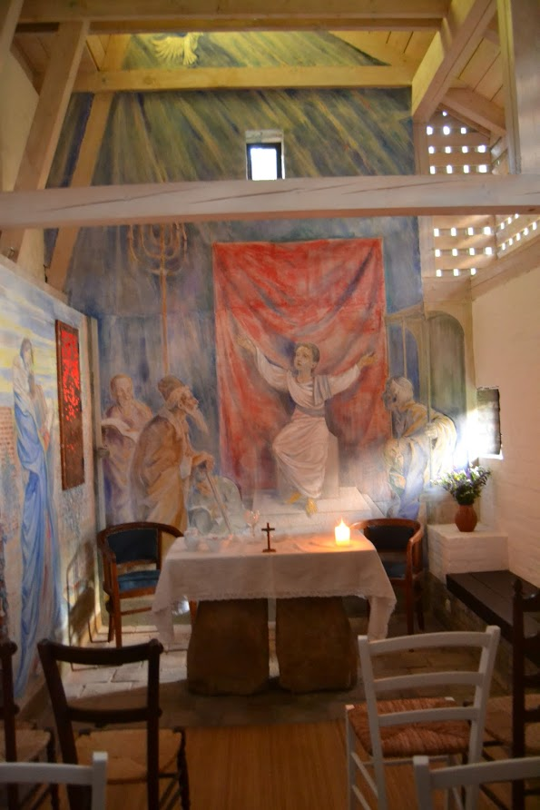
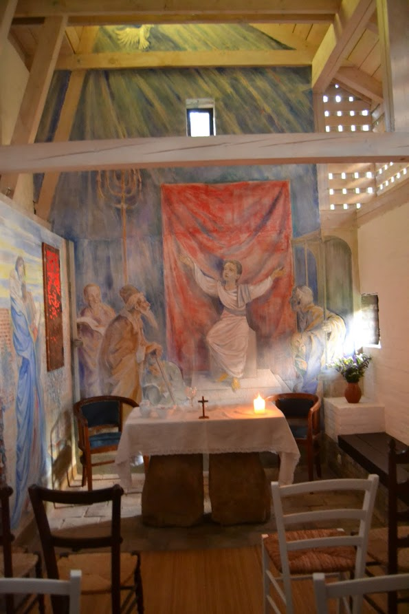
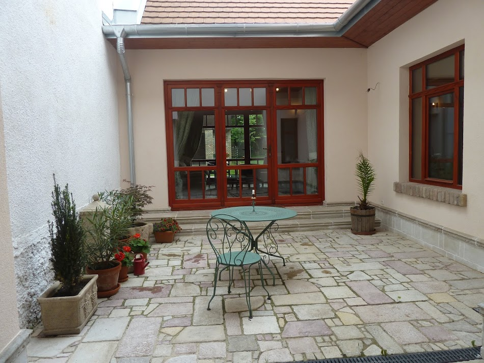
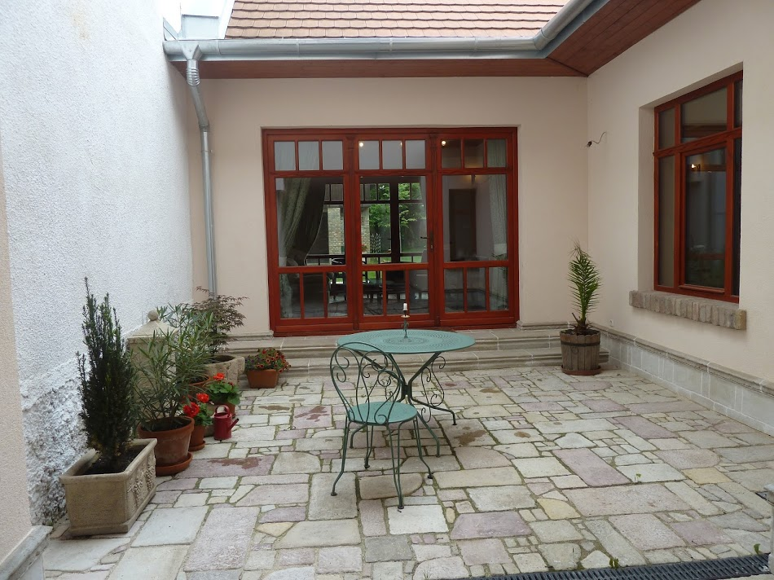

A ház Vác belvárosától 10 perc sétányira található, a város kertvárosi, csöndesebb részében, száz méterre a Dunaparttól és a kerékpárúttól. Kisebb baráti társaságok vagy gyermekes (akár 3-4-5 gyermekes) családok fogadására alkalmas. Az alsó szinten egy nagy amerikai konyhás nappali és egy veranda várja a vendégeket. Itt helyezkedik el a szülői háló.
A második szinten egy hálószoba található, illetve egy nagy nyitott tér gyermekjátékokkal. Mindkét szinten van fürdőszoba, lent külön WC-vel.
A francia házigazda, Philippe számára elképzelhetetlen az élet finom bor nélkül! A ház alatt boltíves, téglaborítású borospince fogadja az örök nedű szerelmeseit. A pince a tulajdonossal való egyeztetés után használható.
Az udvarban felépítettünk egy kápolnát. A falakat jó barátunk, Lelkes Gergely festőművész freskói borítják.
 

A házhoz egy kb. 250 nm-es gondozott kert tartozik. Két teraszon is lehet reggelizni, beszélgetni, borozgatni: a kertre néző melegebb, déli fekvésű teraszon, illetve az árnyékosabb, védettebb belső udvaron, a pációban.
 
